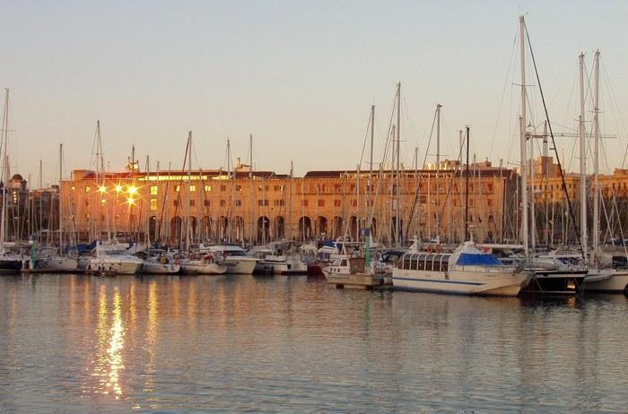

The banquet will take place inside the Catalunya History Museum with a magnificient view over the Old Port from the terrace. There is the option to visit the museum right before the banquet (Oct., 13 19:00-20:00). ISMIR attendees will have free entrance.
